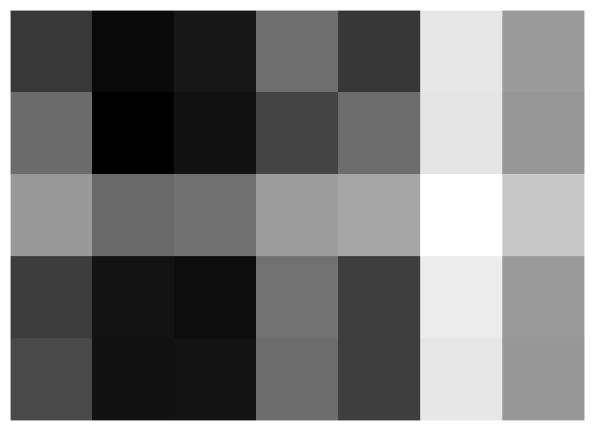
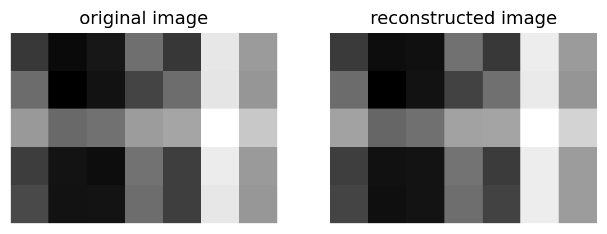
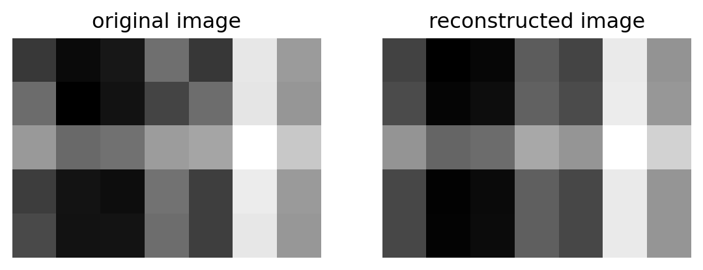
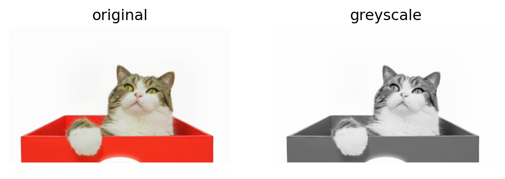
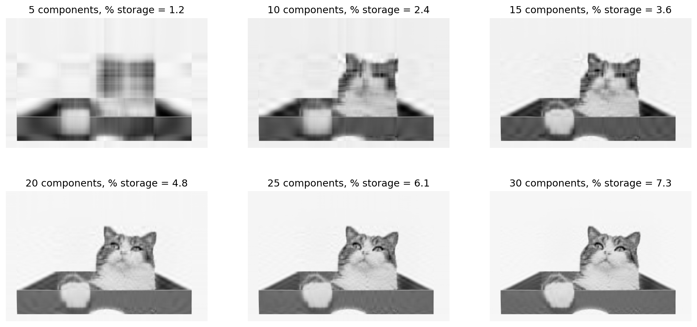
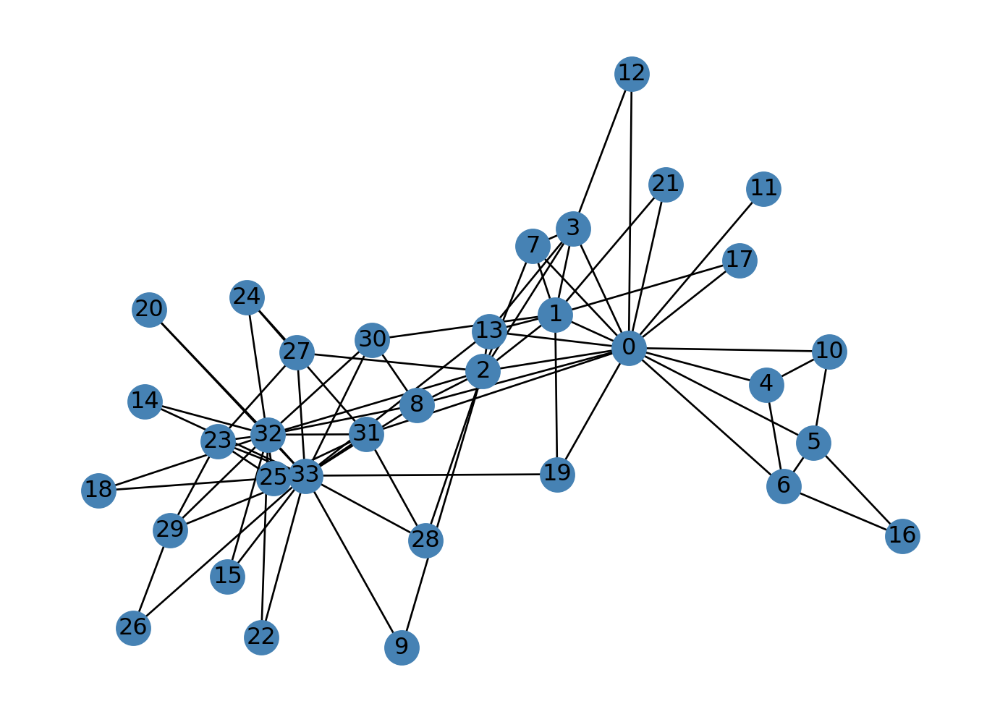
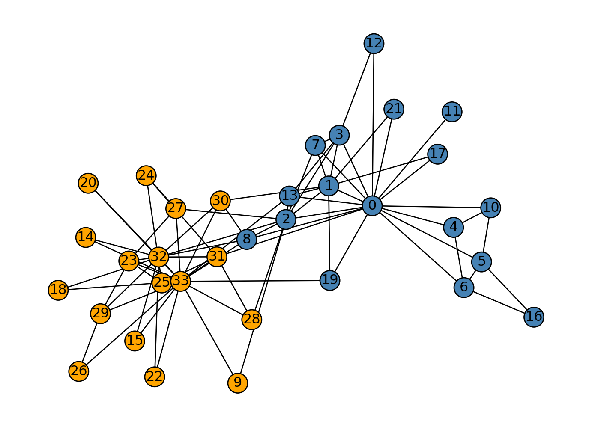

from matplotlib import pyplot as plt
import numpy as np
np.random.seed(12345)Unsupervised Learning with Linear Algebra
2023-04-12
$$
$$
This is a two-part blog post on linear algebra methods for unsupervised learning with two kinds of data: images and graphs. You can be a little bit choosy in which parts of this blog post you want to do. Doing either of the two main parts is fine. You can also choose to do just one of the main parts and its corresponding “optional extras.”
Part 1: Image Compression with the Singular Value Decomposition
We’ve seen a few matrix factorization approaches in lecture, including PCA and nonnegative matrix factorization. PCA is actually mathematically equivalent to an extremely important and versatile technique called singular value decomposition (SVD). SVD is perhaps the most important matrix factorization for applied settings:
Everybody knows that the #SVD is the #bestmatrixdecomposition !!!
— Dr. Daniela Witten ((daniela_witten?)) July 5, 2020
#UDVt #minimumreconstructionerror #maximalvariance #nonconvexbutstillsolvable #nothanksQR#seeyoulaterEigenDecomp#blessed https://t.co/je7Xetgfhr
A singular value decomposition of a real matrix \(\mathbf{A} \in \mathbb{R}^{m \times n}\) is
\[ \mathbf{A} = \mathbf{U}\mathbf{D}\mathbf{V}^T\;, \tag{1}\]
where \(\mathbf{D} \in \mathbb{R}^{m \times n}\) has nonzero entries (the singular values \(\sigma_i\)) only along its diagonal, and where \(\mathbf{U} \in \mathbb{R}^{m \times m}\) and \(\mathbf{V} \in \mathbb{R}^{n \times n}\) are orthogonal matrices. The singular values \(\sigma_i\) collectively give some measure of how “large” the matrix \(\mathbf{A}\) is.
Numpy makes it easy to compute the SVD of a matrix. Here’s a sample matrix we can use:
a_1 = np.random.randint(1, 3, (5, 3))
a_2 = np.random.randint(1, 3, (3, 7))
A = a_1 @ a_2 + 0.1*np.random.randn(5, 7)
Aarray([[ 9.13529168, 10.08864293, 9.79983627, 7.96281575, 9.16690253,
4.95614303, 6.94602586],
[ 8.0476985 , 10.32489439, 9.89787725, 8.94229127, 8.01241213,
5.03026136, 7.05237721],
[ 7.00009403, 8.13438098, 7.9286456 , 6.91688465, 6.76297683,
3.81392392, 5.91392426],
[ 9.05601453, 9.87340655, 10.01198271, 7.89364876, 9.03328827,
4.76405812, 6.9800457 ],
[ 8.84580045, 9.90292641, 9.86929697, 8.02863497, 9.03779841,
4.92461135, 7.03312857]])It’s often useful to visualize a matrix as an image:
plt.imshow(A, cmap = "Greys")
a = plt.gca().axis("off")
Once we have the matrix, we can compute a singular value decomposition:
U, sigma, V = np.linalg.svd(A)Now sigma is a numpy array (vector) containing the singular values of \(\mathbf{A}\). We can reconstruct \(\mathbf{A}\) from Equation 1 by constructing a diagonal matrix containing the elements of sigma and performing the matrix multiplication:
# create the D matrix in the SVD
D = np.zeros_like(A,dtype=float) # matrix of zeros of same shape as A
D[:min(A.shape),:min(A.shape)] = np.diag(sigma) # singular values on the main diagonal
Darray([[47.92787806, 0. , 0. , 0. , 0. ,
0. , 0. ],
[ 0. , 1.59525638, 0. , 0. , 0. ,
0. , 0. ],
[ 0. , 0. , 0.35772778, 0. , 0. ,
0. , 0. ],
[ 0. , 0. , 0. , 0.23426796, 0. ,
0. , 0. ],
[ 0. , 0. , 0. , 0. , 0.15684841,
0. , 0. ]])Having constructed D, we can reconstruct A from U, D, and V up to numerical precision:
U @ D @ V # == A up to numerical precisionarray([[ 9.13529168, 10.08864293, 9.79983627, 7.96281575, 9.16690253,
4.95614303, 6.94602586],
[ 8.0476985 , 10.32489439, 9.89787725, 8.94229127, 8.01241213,
5.03026136, 7.05237721],
[ 7.00009403, 8.13438098, 7.9286456 , 6.91688465, 6.76297683,
3.81392392, 5.91392426],
[ 9.05601453, 9.87340655, 10.01198271, 7.89364876, 9.03328827,
4.76405812, 6.9800457 ],
[ 8.84580045, 9.90292641, 9.86929697, 8.02863497, 9.03779841,
4.92461135, 7.03312857]])Looks like A!
One of the reasons SVD is so useful is that we can often approximate by using a much smaller representation. To attempt this, we pick only:
- The first
kcolumns ofU. - The top
ksingular values inD - The first
krows ofV.
For example, let’s try k = 2:
k = 2
U_ = U[:,:k]
D_ = D[:k, :k]
V_ = V[:k, :]Here, k needs to be smaller than both m and n (the number of rows and columns in A). Once we’ve formed these smaller matrices, we can compute an approximation of A:
A_ = U_ @ D_ @ V_Let’s take a look and see how we did:
def compare_images(A, A_):
fig, axarr = plt.subplots(1, 2, figsize = (7, 3))
axarr[0].imshow(A, cmap = "Greys")
axarr[0].axis("off")
axarr[0].set(title = "original image")
axarr[1].imshow(A_, cmap = "Greys")
axarr[1].axis("off")
axarr[1].set(title = "reconstructed image")
compare_images(A, A_)
The reconstructed image is visually quite close to the original! In this toy example, even we can even do ok with k = 1:
k = 1
U_ = U[:,:k]
D_ = D[:k, :k]
V_ = V[:k, :]
A_ = U_ @ D_ @ V_
compare_images(A, A_)
Application to Images
The following function will read an image for you from a URL and save it as a numpy array.
import PIL
import urllib
def read_image(url):
return np.array(PIL.Image.open(urllib.request.urlopen(url)))I will choose an image of Maru. Maru is a Cat On The Internet who is famous for doing stuff like this:

url = "https://i.pinimg.com/originals/0e/d0/23/0ed023847cad0d652d6371c3e53d1482.png"
img = read_image(url)My image is an RGB color image (I suggest you find an RGB image as well). In the code below, I’ll convert it to greyscale.
fig, axarr = plt.subplots(1, 2, figsize = (7, 3))
def to_greyscale(im):
return 1 - np.dot(im[...,:3], [0.2989, 0.5870, 0.1140])
grey_img = to_greyscale(img)
axarr[0].imshow(img)
axarr[0].axis("off")
axarr[0].set(title = "original")
axarr[1].imshow(grey_img, cmap = "Greys")
axarr[1].axis("off")
axarr[1].set(title = "greyscale")[Text(0.5, 1.0, 'greyscale')]
My grey_img is now a simple (but large) matrix:
grey_img.shape(413, 640)This means that I can use my SVD pipeline to construct approximations of my image. This task is called image compression and it is an important problem for storing large quantities of images on computers that may have small amounts of storage.
What You Should Do
In your blog post:
- Access your favorite RGB image from the internet by its URL, download it, and convert it to greyscale using the workflow shown above.
- Write a function called
svd_reconstructthat reconstructs an image from its singular value decomposition. Your function should have two arguments: the image to reconstruct, and the numberkof singular values to use. - Perform an experiment in which you reconstruct your image with several different values of
k. Your choice ofkshould go up at least until you can’t distinguish the reconstructed image from the original by eye. As part of your experiment, you should determine the amount of storage needed for your reconstruction as a fraction of the amount of storage needed for the original image.- Hint: An \(m\times n\) greyscale image needs \(mn\) pixels (numbers) to represent it. How many numbers must be stored to reconstruct this image with
kcomponents using the SVD?
- Hint: An \(m\times n\) greyscale image needs \(mn\) pixels (numbers) to represent it. How many numbers must be stored to reconstruct this image with
Here’s an example of output from your experiment:
from solutions.images import svd_reconstruct, svd_experiment
svd_experiment(grey_img)
In your blog post, include all your implementation code. Use comments and surrounding text to discuss your solution, and comment on your findings.
Optional Extras
Implement and demonstrate one or more of the following functionalities in your svd_reconstruct function:
- Allow the user to specify a desired compression factor and select the number of components
kto use based on this selection. - Allow the user to specify a desired threshold
epsilonfor the singular values. Then, only components for which the corresponding singular value is larger thanepsilonare used.
Part 2: Spectral Community Detection
Introduction
In lecture, we discussed the Laplacian spectral clustering algorithm as a method for finding interesting clusters in point cloud data sets by operating on a graph. Spectral clustering doesn’t only work on point clouds, however; we can use it on any data that we can represent as a graph, like social networks.
Here’s a famous social network:
import networkx as nx
G = nx.karate_club_graph()
layout = nx.layout.fruchterman_reingold_layout(G)
nx.draw(G, layout, with_labels=True, node_color = "steelblue")
This graph is often called the “Karate Club Graph.” Each node (blue dot) represents an individual member of a karate club. Edges between them are measurements of social ties by the researcher Zachary; informally, you can think of two connected nodes as having interacted in a friendly social setting.
BUT: things didn’t stay friendly for long! The reason that this data set is so famous is that it provides a relatively pure case study of the process of graph fission. In this case, the karate club studied eventually broke into two separate clubs after a conflict between the instructor (“Mr. Hi”) and the club president (“Officer”). Node 0 is Mr. Hi himself, and Node 33 is the club president. This information is present as a node attribute in the data:
clubs = nx.get_node_attributes(G, "club")We can draw the graph with this data like this, using the node_color attribute to control the node colors.
nx.draw(G, layout,
with_labels=True,
node_color = ["orange" if clubs[i] == "Officer" else "steelblue" for i in G.nodes()],
edgecolors = "black" # confusingly, this is the color of node borders, not of edges
) 
The fundamental question of community detection is: can we predict divisions like this based only on the social ties? That is: could we have looked at Figure 1 (NOT Figure 2) and made a guess that the club might split on approximately these lines?
A bit more abstractly, the community detection problem is to divide an observed graph into interpretable or important components, often called “communities” or “clusters.” There are lots of algorithms for this problem, but one of them is spectral clustering! We can extract an adjacency matrix for the graph like this:
A = nx.adjacency_matrix(G).toarray()What You Should Do
- Implement a function called
spectral_clusteringthat accepts a graphGas an argument and returns a vector of binary labels that split the graph. Show your implementation in your blog post, and include comments describing each of the steps. Your implementation should be relatively short (10 lines is more than enough), but you might need to do a little research into functions likenp.linalg.eigin order to better understand how they represent eigenvectors in their return value. - Show a plot of the graph like the ones above, using the labels that you found with your algorithm.
- Discuss the extent to which the labels found by your algorithm match the actual club division.
Optional Extras
- Implement multiway spectral clustering. In multiway spectral clustering, our aim is to split the graph into \(k\) pieces, where \(k > 2\). Then, demonstrate multiway spectral clustering on the karate club network, or any other network data you can find. Do the results look reasonable to you by eye?
- There are several approaches to this problem. Here’s one way:
- Retrieve the \(k\) eigenvectors corresponding to the eigenvalues smallest in magnitude.
- Treat these \(k\) eigenvectors as defining a matrix \(\mathbf{U} \in \mathbb{R}^{n\times k}\).
- Perform k-means clustering on this matrix with \(k\) centroids, and return the corresponding labeling.
- There are several approaches to this problem. Here’s one way:
- Propose a measure of similarity between two categorical labelings \(\mathbf{z}_1\) and \(\mathbf{z}_2\). Your measure should be 1 if \(\mathbf{z}_1\) and \(\mathbf{z}_2\) split the graph into exactly the same clusters, should be no smaller than 0 in any scenario. Note that a challenge for this problem is that your measure should be permutation invariant: if \(\mathbf{z}_1\) is the same as \(\mathbf{z}_2\) except with the 0s and 1s swapped, they still correspond to the same clustering and should be considered identical. Then, implement your measure and use it quantitatively compare the clusters found by spectral clustering with the true club split.
- This problem is harder than it sounds! But there are lots of good approaches, so please feel free to be creative.
© Phil Chodrow, 2024